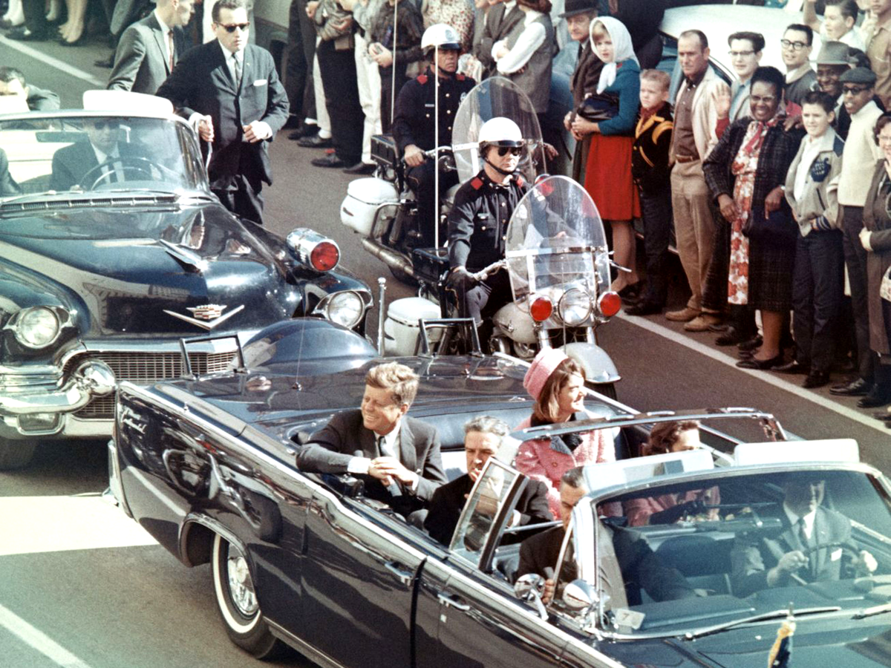
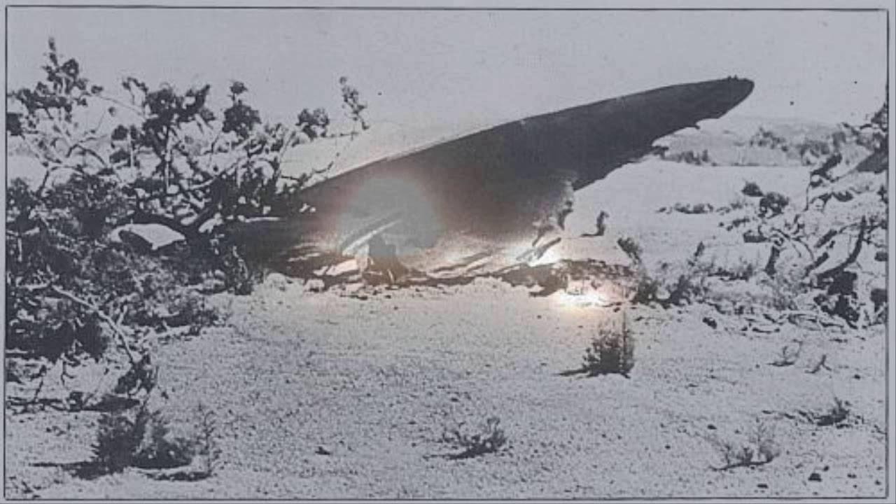

Bebizonyított konspirációs elméletek
911 terrortámadás avagy belsős munka?


Elnöki intelem, foteltudomány, ellenérdekelt propaganda. A jelen összesküvés-elméletekkel teli világa New
Yorkban gyökerezik. Leomlottak az ikertornyok, de felépültek a konteók.
Az összeesküvés-elméletek abban a percben megszülettek, ahogy a tornyok összedőltek. A földbe csapódó vasbeton a
valóság tapasztalatával kapcsolatos közvélekedést rengette meg, aminek hatásai évtizedekkel később is világosan
látszanak az Egyesült Államok napi politikai életén.
Milyen összeesküvéseket véltek felfedezni minden idők legnagyobb terrortámadása mögött?
Részletek
Szándékos provokáció
A magyar történelemben a Kassa 1941-ben történt, 32 emberéletet követelő bombázása volt sokáig a
provokáció
tankönyvi esete. A történtek ahhoz vezettek, hogy a Magyar Királyság hadba lépett a Szovjetunió ellen a
második
világháborúban. Valószínűleg már nem fogjuk megtudni, mely ország gépei követték el a bombatámadást, de
az
biztos, hogy szovjet felségjeleket viseltek. Egy lehetséges forgatókönyv szerint megtévesztő szándékkal
festettek hamis felségjeleket a bombázókra, hogy a hadba lépést kiprovokálják. Ilyen lenne a hamis
zászló vagy
false flag művelete, aminek a WTC elleni támadást a konteóhívők tekintik.
Az elmélet szerint a terrortámadás célja ezúttal is háború kirobbantása volt, legfőbb haszonélvezői
pedig az
amerikai hadsereg és az őt kiszolgáló hadiipar összefonódásával létrejött, komoly gazdasági és politikai
erővel
rendelkező, de nem demokratikus félhomályban ténykedő katonai-ipari hatalmi központ. A katonai-ipari
komplexum
hatalma visszaszorításának fontosságára egyébként egy amerikai elnök, Dwight D. Eisenhower hívta fel a
figyelmet
1961 januárjában mondott búcsúbeszédében. Eisenhower a második világháborúban Európában harcoló amerikai
erők
főparancsnoka, NATO-főparancsnok és a XX. század egyetlen tábornoki rangú amerikai elnöke volt, ezért
biztos
tudta, miről beszél, hiszen kevesebben ismerhették közelebbről a jelenséget.
Lehet persze, hogy Eisenhower figyelmeztetését inkább politikai tanácsként érdemes értelmezni, és valami
olyanra
figyelmeztetett, amit végül a Szovjetunióval tett a saját katonai-ipari komplexuma. Azok, akik ismerik a
hadseregekre jellemző agyafúrt körmönfontságot vagy inkább annak teljes hiányát, még hihetnek a
szándékos
provokáció elméletében, csak egy másik érdekcsoportot kell találniuk hozzá. Ilyen lehet az energiaipar,
ami
olajat akar, vagy különböző tervek alapján vezetéket építene Afganisztánban, de ilyen lehet a globális
pénztőke,
ami mindent a markában tart, még a katonai-ipari komplexumot is.
Nem voltak repülőgépek
Ennek az elméletnek a hívői szerint lehetetlen, hogy a Boeing utasszállítók fizikailag komoly kárt
okozzanak egy
felhőkarcolóban, ezért a valóságban rakétákat lőttek az épületre (azok, akik), a többi pedig
trükkfelvétel volt.
Ez az utolsó mozzanat igényli a legintenzívebb magyarázatot, ugyanis rengeteg szemtanú volt, és nagyon
sok
felvétel készült a történtekről. A hívők szerint egyrészt számítógépes animációt láttunk, másrészt
titkos
hologramtechnikával alakították repülőgépekké a rakéták látványát.
Ez az elmélet egyébként egy korai konteó továbbfejlesztett változata, ami eredetileg arról szólt, hogy
az
American Airlines 77-es járata, amely a Pentagonba csapódott, látszólag túl kevés kárt okozott, és nem
hagyott
roncsot, amire a magyarázat az volt, hogy nem létezett, csupán egy rakéta volt. A titkos csúcstechnikát
és a
médiát integráló elmélet egy igazi hidegháborús, fantasztikus ág, vannak nála jóval archaikusabbak.
Nem voltak zsidó áldozatok
Minden valamirevaló összeesküvés-elméletbe kell egy antiszemita szál. A 9/11 esetében ez úgy szól, hogy
négyezer
zsidó munkavállaló a támadások napján nem vette fel a munkát a World Trade Center irodáiban. Ha úgy
tetszik,
mivel az egészet a zsidó irányítású globális pénzügyi hatalom vagyis a titkos világkormány tervelte ki,
ezért az
áldozatok között nincsenek zsidók. A 2071 áldozat között ugyanakkor 119 zsidó és további 72, vélhetően
zsidó
származású személy volt, akik így az áldozatok 9,2 százalékát teszik ki (ami ravasz módon tökéletesen
megegyezik
a New Yorkban dolgozó zsidó származásúak arányával).
A Guardian 2001. decemberi cikke szerint ez az elmélet a libanoni Al-Manar televízióban jelent meg egy
héttel a
terrortámadás után - az Al-Manarról pedig tudható, hogy az iráni támogatást élvező síita
terrorszervezet, a
Hezbollah televíziója, amely kevésbé a világkormány, mint inkább az izraeli titkosszolgálat, a Moszad
felé
igyekezett terelni a gyanút.
A tornyokat felrobbantották
Ha volt repülőgép, ha nem, a tűztől nem dőlhettek össze a tornyok, szól az elmélet. Ez a legkorábbi
konteó már
hat órával a támadás után megjelent az interneten. Hamarosan a romok alatt rekedtek mentése során
átvágott
acélelemek fotóival gondolták bizonyítani, hogy a fő tartószerkezetet termittel olvasztották el. Ez már
a modern
internetes konteók előképe, ahol foteltudósok bárhonnan származó adatokkal bármiről szakértő véleményt
formálnak.
Az évek során a világon több olyan tűzeset is volt, amelyben acélszerkezetes tornyok tűz hatására
összedőltek,
és demonstrálták az ilyen állítások téves mivoltát.
Az amerikai közvélemény kezdetben
EGYÁLTALÁN NEM VOLT VEVŐ AZ ÖSSZEESKÜVÉSEKRE
a sokk hatására inkább összezártak. A legtöbb elmélet Európából érkezett, Franciaországban fél évvel
később már
könyvet adtak ki arról, hogy 9/11 hazugság, ami komoly visszatetszést keltett az óceán túloldalán.
George W.
Bush kabinetjének második iraki háborúhoz vezető manipulációi azonban mindent borítottak, és végül az
Egyesült
Államokat is elöntötték az összeesküvés-elméletek és a bennük hívők.
A brit Telegraphnál a 30 legnagyobb összeesküvés-elméletet összefoglaló cikkben 2008-ban a szeptember
11-i
terrortámadás már egyértelmű első helyezett a Kennedy-merénylet, Diana hercegné halála, a holdra
szállás, a
chemtrailek és egyebek előtt. Első helyét a világméretű koronavírus-járvánnyal kapcsolatos elméletek sem
tudták
megrengetni.
A megrendelt Kennedy-gyilkosság

„Elnök úr, igazán nem mondhatja, hogy Dallasban nem szeretik önt” - fordult Texas állam kormányzójának felesége,
Nellie Connally a vele utazó Kennedy felé. Pár perccel később, szavaira rácáfolandó, lövések dördültek, és a
csillogó, nyitott, elnöki limuzin ülései vérrel és agyvelő darabokkal szennyeződtek."
Részletek
1963. november 22-én Lee Harvey Oswald sikeres merényletet hajtott végre az Egyesült Államok 35. elnöke,
John
Fitzgerald Kennedy ellen a Texas állambeli Dallasban.
Oswald egy tankönyvraktár hatodik emeletéről távcsöves puskájából nyitott tüzet. Három lövést adott le
az elnöki
limuzinra.
Az első golyó az első ülésen helyett foglaló texasi kormányzót sebesítette meg, a másik kettő a
kormányzó mögött
ülő Kennedyt a fején és a nyakán találta el, halálos sérüléseket okozva az elnöknek.
Lee Harvey Oswaldot, aki egy intézkedő rendőrjárőrt is meggyilkolt, még a gyilkosság napján elfogták és
letartóztatták.
A tárgyalására már nem kerülhetett sor, ugyanis a kommunista és Castro-szimpatizáns Oswaldot, aki
korában
majdnem három évet élt a Szovjetunióban, két nappal a merénylet után lelőtte egy éjszakai lokál
tulajdonosa,
bizonyos Jack Ruby.
Oswaldot a dallasi főkapitányságról szállították volna a megyei börtönbe, ekkor lépett akcióba Ruby, aki
közvetlen közelről hasba lőtte Kennedy gyilkosát. Ruby később úgy magyarázta tettét, hogy az elnök iránt
érzett
szimpátia miatt gyilkolt.
Hogy pontosan mi motiválta Rubyt, aki a börtönben egy rejtélyesnek mondható tüdőrák következtében hunyt
el
1966-ban, a tárgyalások során nem sikerült megnyugtatóan tisztázni.
A Kennedy-gyilkosság elvarratlan szálai hosszú ideig élénken foglalkoztatták a közvéleményt, így az
elmúlt
évtizedek során számtalan összeesküvés elmélet született az elnök halálával kapcsolatban
A merénylet kivizsgálása céljából létrehozott Warren-bizottság szerint Oswald nem állt kapcsolatban
semmiféle
összeesküvő csoporttal és magányos farkasként csapott le az elnökre, csakúgy, mint Ruby, akiről a mai
napig
sokan azt feltételezik, hogy nem revánsvágyból húzta meg a ravaszt, hanem azért, hogy eltörölje a
nyomokat.
A Warren-bizottság 888 oldalas jelentése nem adott megnyugtató választ a merénylet kapcsán felmerülő
miértekre,
és nem sikerült meggyőznie a kétkedőket, akik szerint Kennedy elnöki tevékenysége konfliktusok
sorozatával telt,
így bőven akadtak olyanok, akik szerették volna koporsóban látni őt.
Az elnök harcot hirdetett a szervezett bűnözés ellen, és a polgárjogi küzdelmekben teljes
mellszélességgel
kiállt az afroamerikaiak jogegyenlősége mellett, így magára haragíthatta nemcsak az amerikai alvilágot,
hanem a
déli államok szélsőjobboldali elemeit is.
Az elnök elleni merénylet megszervezésével a CIA-t és a kubai emigránsokat is kapcsolatba hozták,
mondván, hogy
a Castro megbuktatása céljából elindított Disznó-öbölbeli fiaskó miatt Kennedy szálka volt, mind a
hírszerzés,
mind a Castro-ellenes kubaiak szemében.
Az összeesküvés-elméleteket gyártók szerint a feltételezett tettesek között szerepelnek a fegyvergyártók
is,
akik ellenezték Kennedy azon törekvését, hogy az USA lehetőleg minél előbb kihátráljon az egyre mélyülő
vietnámi
konfliktusból.
A Warren-bizottság jelentése mellett érvelőket azonban nem érdeklik ezek a teóriák, és a merénylet által
generált történetek megszületését egyszerűen azzal magyarázzák, hogy a tömegek képtelenek elfogadni azt
a tényt,
hogy a népszerű Kennedy, az Egyesült Államok első embere egy szánalmas gyilkosság áldozatává vált.
A roswelli ufószerencsétlenség
Jesse Marcel alezredes a roswelli baleset híres képén az az egyenruhás, aki az alufóliának látszó tárgyakat
tartja. 1947-re többszörösen kitüntetett hírszerzőként, és akkoriban a világ egyetlen atomfegyverekkel
felszerelt bombázóalakulatának, az 509. bombázó ezrednek (air wing) hírszerzési főnökeként őt küldték a New
Mexicó-i Roswellnél történt különös légi baleset kivizsgálására.

Részletek
A roswelli ufószerencsétlenség vagy roswelli incidens egy 1947 nyarán bekövetkezett állítólagos UFO
balesete, amely
az Amerikai Egyesült Államokban, az Új-Mexikó államban található Roswell környékén történt. A hivatalos
amerikai
szervek közölték, hogy egy időjárási szonda (meteorológiai ballon) zuhant le egy farmer, William „Mac”
Brazel
kezelésében levő mezőségre. Több más nyilatkozatot is kiadtak, hogy félreértéseket, és elferdítéseket
tisztázzanak.
Roswell a legtöbbet emlegetett ufó-eset, de itt sem sikerült megdönthetetlen, kézzelfogható bizonyítékot
szerezni
arra vonatkozóan, hogy földönkívüli eredetű szerkezetre leltek a térségben. A történetről az azóta eltelt
évtizedekben rengeteg változat született, a legtöbb ellentmondásos részlettel. A környékbeliek számára az
ufóturizmus fellendítette a helyi gazdaságot. Minden év júliusában ufófesztivált rendeznek, amelyből például
1996-ban több mint 5 millió dollár bevétele származott a városnak.[1]
A maradványok felfedezésekor még senki nem gondolt arra, hogy földönkívüli hajótörés következett volna be
Roswellben, jóllehet a távolabbi Sacramento városának The Sacramento Bee[2] című újságja repülő csészealj
elfogásáról számolt be, ezt végül átvette néhány másik hírlap is. Csupán harminc évvel később került elő
ismét a
téma egy bulvárlapban, amikor az egyik szemtanú, Jesse Marcel a nyilvánosság előtt beszélt, igaz már az
elején maga
is ellentmondásba keveredett. Végül Charles Berlitz, aki a 70-es években már több más paranormális ügyet
dobott fel
(például a Bermuda-háromszöget) írt róla egy könyvet, ami bestsellerré vált.[3]
1997. június 24-én a Pentagon sajtókonferenciáján számos videófelvételt és egy 231 oldalas részletes
jelentést
hozott nyilvánosságra, amely több évtizedes vizsgálat eredményeképpen minden észszerű kétséget eloszlatva
cáfolja az
UFO baleset létezését és ezzel a maga részéről lezárta az ügyet.
Az eset
Az esemény kezdetének pontos dátuma nem ismert, egyesek 1947. június 14-re datálják. William Brazelnek,
egykori művezetőnek, Roswell mellett állt a tanyája és állattenyésztéssel foglalkozott. A gazdaság 50 km-re
feküdt Roswelltől, legnagyobb része a környéknek gyakorlatilag lakatlan volt. Brazel nem mindig járt a
városban, napjai jelentős részét a földjén való munkával töltötte, s nem volt telefonja sem. Csak pár héttel
később tudott kapcsolatba lépni a roswelli légibázissal a helyi sheriff útján. Bejelentése szerint a földjén
szétszóródott maradványokat talált, amiket ő maga nem tudott azonosítani. A történetek szerint a maradványok
ezüstszínűek voltak, gumicsíkokhoz, vagy alufóliához voltak hasonlatosak, de akadt közöttük néhány szilárd,
csőhöz, vagy valamilyen bothoz hasonló darab is.
Bizonyos verziók szerint egy nagyobb korong alakú tárgyat is látott a földjén Brazel. A törmelékeknek a
farmer nem tulajdonított eleinte nagy jelentőséget, ezért csak pár darabot vitt el magával és később ezeket
fel is mutatta a sheriffnek. Jesse Marcel, aki a roswelli légibázis egyik tisztje volt, a sheriffel kiment a
helyszínt megtekinteni és ő is begyűjtött néhány darabot.
Rövidesen hivatalos közleményt is leadtak a felfedezésről, amely szerint időjárási szonda darabjaira
bukkantak Brazel farmján. A hír megjelent a városi lapban, a Roswell Daily Record-ban is. Ugyanez a lap
egyik alkalommal aztán szintén repülőcsészealjról cikkezett, mint a sacramentói és néhány másik újság.
Értesítették továbbá az FBI-t és az amerikai légierő kötelékébe tartozó Eight Air Force vezetését is, de
nekik is csak meteorológiai ballonról számoltak be.
A pletykák ennek ellenére terjengeni kezdtek, miszerint nem is ballon, hanem ismeretlen repülő jármű
szállhatott le a Brazel-farmon. A pletykák hozzátoldották még azt a históriát is, hogy Brazel hazavitte és a
pajtájában helyezte el a repülőgépet. Nem mindegyik szóbeszéd szólt repülőcsészealjról, nem kevés volt
azoknak a száma, akik szovjet repülőgépről, vagy rakétáról suttogtak. Ekkor újabb sajtóközleményekkel
igyekeztek megerősíteni az álláspontjukat a katonai vezetők, hogy időjárási szonda zuhant le, s nem
valamilyen ismeretlen repülő eszköz került elő (rakéta, vagy repülőgép). Ezek után a szóbeszédek
elcsendesedtek és az emberek többsége lassacskán elfelejtette a roswelli esetet.